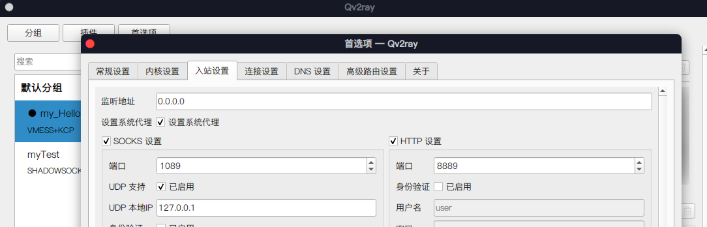

Arch Linux 安装 Anbox 笔记
根据 arch wiki 整理的 Anbox 安装笔记：
wiki 地址：https://wiki.archlinux.org/title/Anbox
安装内核模块
需要将内核更换为 linux-tls：
sudo pacman -S linux-lts linux-lts-headers |
安装内核模块：
yay -S anbox-modules-dkms |
加载内核模块：
sudo modprobe binder_linux devices=binder,hwbinder,vndbinder,anbox-binder,anbox-hwbinder,anbox-vndbinder |
编辑 /etc/modules-load.d/anbox.conf，以便开机时启用内核模块：
ashmem_linux |
编辑/etc/tmpfiles.d/anbox.conf，下面的文件，以便开机时挂载 binderfs：
# /etc/tmpfiles.d/anbox.conf |
在 /etc/fstab 末尾添加：
none /dev/binderfs binder nofail 0 0 |
安装 anbox
使用 Archlinuxcn 源安装：
sudo pacman -S anbox-git anbox-image |
设置网络。我电脑上使用 NetworkManager 作为网络管理，因此只需要这样就完成 Anbox 的网络配置了：
nmcli con add type bridge ifname anbox0 -- connection.id anbox-net ipv4.method shared ipv4.addresses 192.168.250.1/24 |
这里只需要执行一次，以后开机时，NetworkManger 会自动配置网络。 其他配置网络的方法自行参考 Arch Wiki。
启用服务：
sudo systemctl start anbox-container-manager.service # 启动 |
检查 Anbox 状态，如果显示为 running，那应该没什么太大的问题了：
sudo systemctl status anbox-container-manager.service |
这时候从桌面的 Anbox 图标点进去就能看到 Anbox 的界面了。
安装应用
需要确保 adb 命令存在：
sudo pacman -S android-tools |
之后使用 adb install 就可以安装 app 了：
adb install /path/to/app.apk |
ARM 支持
目前没看出来有多大用，一些 ARM 构架的 apk 是能安装，但启动不了。
安装前准备
先安装一些依赖：
sudo pacman -S squashfs-tools tar unzip curl wget lzip |
接下来的内容在将来可能会过时，建议参考原项目的地址：https://github.com/geeks-r-us/anbox-playstore-installer
ARM 的安装脚本在 Arch 上并不能直接使用，在此之前需要进行手动干预。需要手动修改 /usr/lib/systemd/system/anbox-container-manager.service 文件，在 ExecStart 这一行的末尾加上 --use-rootfs-overlay，修改后的文件大概长这样：
[Unit] |
然后重启 Anbox 服务：
systemctl daemon-reload |
安装
接下来只需要下载脚本，运行就行，这个过程需要下载一些文件，可能需要翻越 GFW：
mkdir a |
没问题的话，打开 Anbox 应该就能发现多了一个 Google 引用市场，arm 构架的 apk 也能成功安装。
代理设置
设置代理
主机使用的是 Qv2ray进行代理，它默认监听 127.0.0.1 ，此时 anbox 是不能访问电脑上的代理服务器的。解决办法也很简单，在主界面点击首选项，将入站设置里的监听地址改成 0.0.0.0 就行了：

现在通过 adb 设置代理应该就没有问题了：
adb shell settings put global http_proxy <ip>:<port> |
取消代理
adb shell settings put global http_proxy :0 |